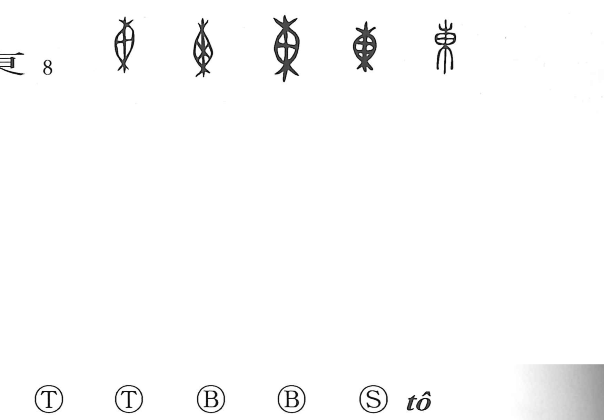

東

Kun: higashi, azuma | On: tou
east ・ eastern
Explanation
東 originally pictures a sack tied at both ends. Its middle bulges with the contents, while the upper and lower ends are gathered shut. This is an early form of the sack later written 橐; the ancient shapes preserve the tied ends clearly.
The graph was borrowed for the sound of the word ‘east.’ In the surviving inscriptions it already names the direction, and its original use as the name of a sack is not preserved. The modern meaning therefore comes through a sound loan. The visible picture explains the form of the character, while the borrowing explains why that form came to name the east.